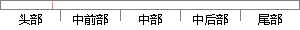

(1)描述生存过程，比如生存时间分布特点，生存率等，常用Kaplan-Meier法（简称K-M法）和寿命表法；
片段位置图

相似结果|
1
原句片段：(1)描述生存过程，比如生存时间分布特点，生存率等，常用Kaplan-Meier法（简称K-M法）和寿命表法；
相似片段 1：文化程度等) 四、生存分析的应用 描述生存过程 研究生存时间的分布特点,估计生存率及绘制生存率曲线 方法: 乘积极限法(kaplan-meier法) 寿命表法 (life-table ...
相似片段 2：1958年:生存函数的计算方法—Kaplan-Meier法(乘积极...疾病预后分析等, 生存时间的涵义也随之扩展到更广义...描述生存过程:研究生存时间的分布特点、 估计生存率...
相似片段 3：描述生存过程:估计不同时间的总体生存率,计算中位...统 计方法包括 Kaplan-Meier(K-M)法、寿命表法。...生存时间的类型 1. 完全数据(complete data) :从...
|
※ 片段修改建议 ※
近似词参考：- 描述：描写 形貌
- 生存：保存 糊口生涯 生活 生计
- 过程：进程 历程
- 比如：好比 譬如
- 生存：保存 糊口生涯 生活 生计
- 时间：时候
- 分布：散布 漫衍
- 特点：特色 特征
- 常用：经常使用
系统自动生成语句：(1)描写保存进程，好比保存时候散布特色，保存率等，经常使用Kaplan-Meier法（简称K-M法）和寿命表法；
注：本片段修改建议为系统自动生成，仅供参考。